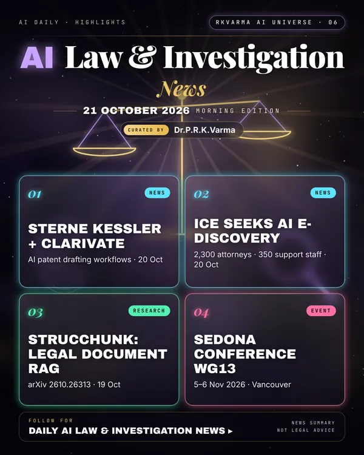

Latest updates · 21 October 2026
In the full issue →AI is moving deeper into legal operations: IP firm Sterne Kessler is co-developing AI patent workflows with Clarivate, and US Immigration and Customs Enforcement is scouting AI e-discovery tools for its 2,300 attorneys.
Research, industry & policy
- Sterne Kessler and Clarivate partner on AI patent workflows, Law.com Legaltech News · 20 Oct 2026: The software development partnership will build AI-enabled workflows across the patent lifecycle, starting with application drafting.
- ICE wants AI to take on more of its legal workload, Government Executive · 20 Oct 2026: ICE is surveying cloud-native e-discovery software for its Office of the Principal Legal Advisor, which has 2,300 attorneys and 350 support staff handling litigation, investigations and other legal matters.
Journals & preprints
- StrucChunk: Structure-Aware Retrieval for Legal Document RAG, arXiv 2610.26313 · 19 Oct 2026: Retrieval-Augmented Generation (RAG) can ground LLM outputs in domain-specific knowledge, but legal documents are hard: standard chunking fragments hierarchical argument structure, and generic…
- LLMs Prompted for Legal Context Refuse More: Overrefusal from Small On-Premises LLMs in Criminal Legal Context, arXiv 2610.26211 · 19 Oct 2026: Confidentiality requirements increasingly push legal professionals toward small, on-device LLMs that keep case data in-house, used for everyday tasks such as summarization, translation, and reformulation.
Conferences, workshops & events
- The Sedona Conference WG13 Midyear Meeting, 5–6 Nov 2026 · Vancouver: Working Group 13 on AI and the law.
- ALQAC & ISAILD 2026, 11–14 Nov 2026 · Kanazawa, Japan: Automated Legal Question Answering Competition.
Why it matters
Firms and agencies are turning AI from pilots into core legal infrastructure, which raises the stakes for accuracy, privilege and oversight. News summary only, not legal advice.

